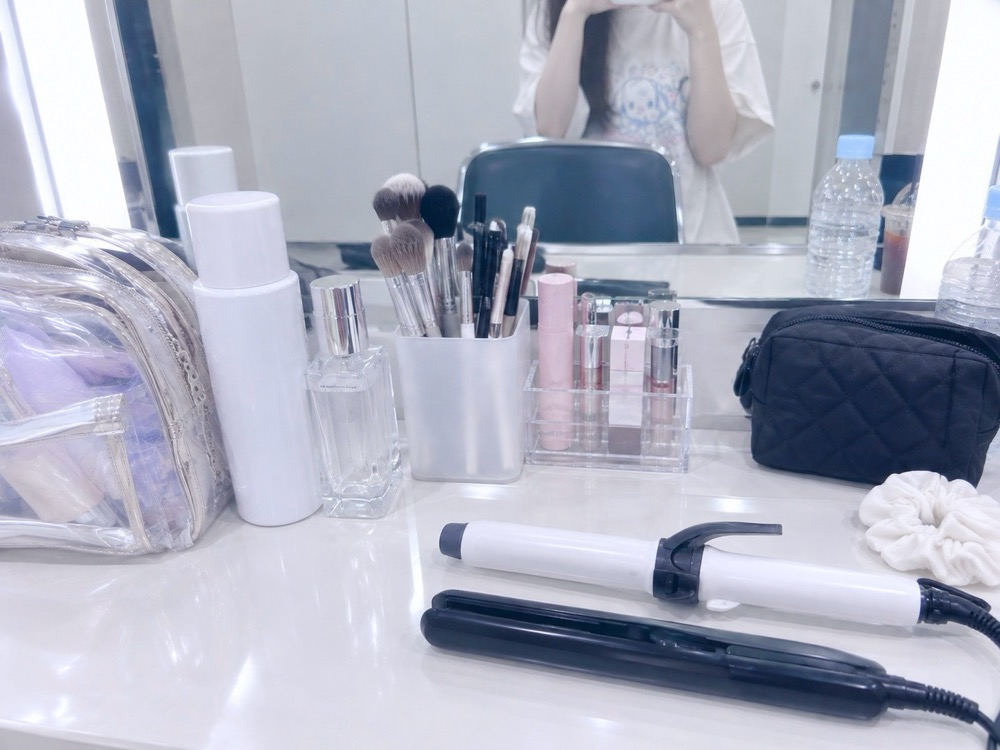
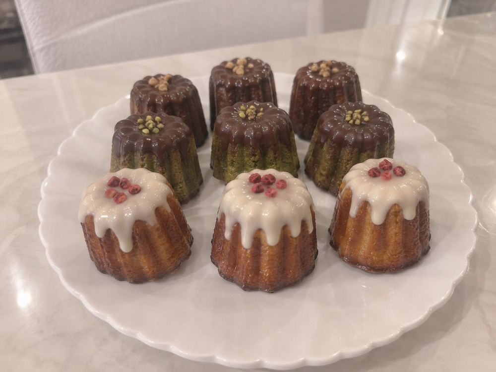
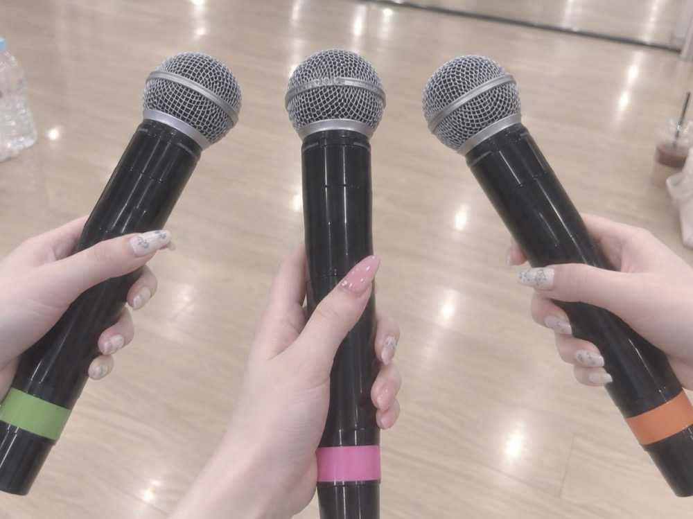
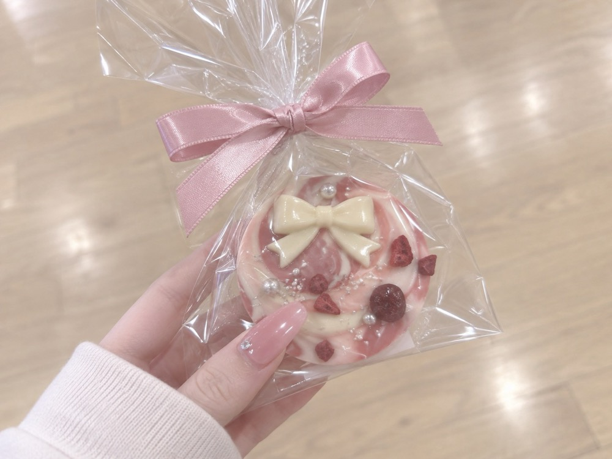

ゆののまいにちをおすそわけ♡
りんさんの活動休止が発表されました。 ファンの皆さん、りんさん推しの方は特に不安でいっぱいだと思います。ご心配をおかけしてしまって申し訳ありません。 私たちはりんさんの分まで精一杯やれることをやるだけだと思っています。 りんさんが帰ってきたときにがっかりされないように頑張りますので、引き続き見守っていただけると嬉しいです。 よろしくお願いします。
すっかりあつくなってきましたね( × ×꒦꒷ ) いつもはふわふわのお洋服がすきなんですが、真夏はさすがにあつさにまけてしまってTシャツばっかりです( ¡ - ¡ ) はやく涼しくなってほしいなぁ… 夏といえば、夏衣装が解禁されましたね🎀 グッズのTシャツのアレンジなので、みなさんもぜひおそろいにしてみてください♡ いつもよりメンバーカラー感たっぷりでとってもかわいく仕上がってます🎀💗 この夏たくさん着る予定なので見逃さないでくださいね🫶🏻🐰
さいきんヘアアレンジを練習してます！

この前なぎささんのヘアアレンジをさせてもらいました なぎささん、髪がとってもサラサラツヤツヤでうらやましいですඉ ඉ ヘアケア何してるんですか？って聞いたら、おすすめのヘアケア用品おしえてくれました！やさしいなぁ(ᴗ͈ˬᴗ͈⸝⸝)🎀 だいすきです♡

最近カヌレ作りにはまってます♡ このまえおしごと一緒だったらんさんにあげたら ｢おいしすぎ～！！｣ ってたくさん食べてくれてうれしかったなぁ⸝⸝> <⸝⸝ᐡ♡ らんさんは抹茶がすきみたいです🍵 私のおきにいりはチョコレート生地にホワイトチョコをトッピングしたものです🍫💭 また作ってほしいっていってもらえたので、今度は7人で集まったときに作りたいですね🍪🎀
まいにちとっても暑いですね😿 みなさん体調は大丈夫ですか？ 私たちははじめてのツアーに向けて、まいにちレッスンです🎤 あきさんといろはさんが書いてくれた新曲もあがってきて、みんなで振り入れしてます𐔌ᵔ ܸ>⩊< 𐦯♡

おふたりと🧡💚 とってもすてきな曲なのではやく皆さんにお見せしたいです♡ おたのしみに🎧🎀
梅雨ですね…(´._.｀) 雨がおおくて、なんだか心もじめーっとしちゃいます😿 レッスン室でみーといっしょにじめーっとしてたら、いろはさんがおかしくれました！

いろはさん、 ｢みんなにピッタリだったから買っちゃった☺️｣ って！と～ってもかわいいですよね🥺 あまくておいしくてじめじめがふっとびました(*´˘`*)♡ 今度なにかつくっておかえししたいとおもいます🥣🍪
みなさんはじめまして♡ 百瀬ゆの です🐰 このたび、イースタープロダクションから新しくデビューするUnRe:alのメンバーになりました(⑉• •⑉)♡ "ももせ"ということで、ももいろ担当🎀💗 2月20日生まれです❄(もうすぐです…！) だいすきなメンバーたちと、UnRe:alを大きなグループにできるようにたくさんがんばります！ これからよろしくおねがいします( ⑅ ᴗ͈ ᴗ͈)♡